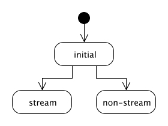
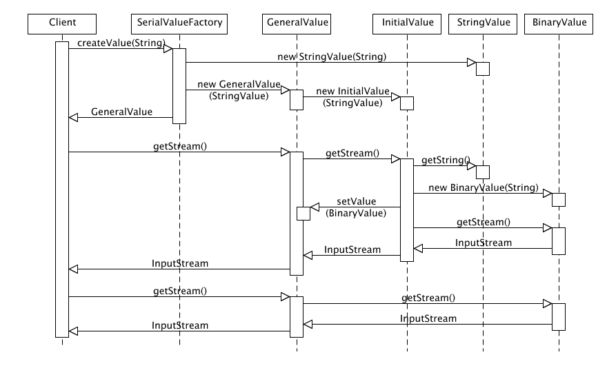

|
|||||||||||
| PREV PACKAGE NEXT PACKAGE | FRAMES NO FRAMES | ||||||||||
See:
Description
| Interface Summary | |
| StatefulValue | The StatefullValue interface defines the API used for the state
classes used by the SerialValue class. |
| Class Summary | |
| BaseNonStreamValue | The BaseNonStreamValue class implements the basic committed
value state for non-stream values as a part of the State design pattern (Gof)
used by this package. |
| BinaryValue | The BinaryValue class implements the committed value state for
Binary values as a part of the State design pattern (Gof) used by this
package. |
| BooleanValue | The BooleanValue class implements the committed value state for
Boolean values as a part of the State design pattern (Gof) used by this
package. |
| DateValue | The DateValue class implements the committed value state for
Date values as a part of the State design pattern (Gof) used by this
package. |
| DoubleValue | The DoubleValue class implements the committed value state for
Double values as a part of the State design pattern (Gof) used by this
package. |
| LongValue | The LongValue class implements the committed value state for
Long values as a part of the State design pattern (Gof) used by this
package. |
| NameValue | The NameValue class implements the committed value state for
Name values as a part of the State design pattern (Gof) used by this package. |
| PathValue | The PathValue class implements the committed value state for
Path values as a part of the State design pattern (Gof) used by this package. |
| ReferenceValue | The ReferenceValue class implements the committed value state
for Reference values as a part of the State design pattern (Gof) used by
this package. |
| SerialValueFactory | The SerialValueFactory class is used in the RMI infrastructure
to create serializable Value instances on the client side. |
| StringValue | The StringValue class implements the committed value state for
String values as a part of the State design pattern (Gof) used by this
package. |
Serializable implementation of the JCR Value interfaces.
This package contains a simple implementation of the JCR
Value and ValueFactory
interfaces. The implementation has no external dependencies and supports
serialization of Value instances.
Note that the Value instances created by this package are not thread safe.
This package uses the State design pattern (GoF) to implement the JCR
Value interface. A Value instance is initially
in a fresh state that gets committed to a stream or non-stream state once
the first value getter method is invoked. After that the Value state is
no longer changed. The state diagram below illustrates the Value states.

The GeneralValue implementation class acts as the
state context object. It contains a reference to another Value instance that
represents the current Value state. The reference is initially set to
an InitialValue instance that is used to intercept
the first value getter method. When the first method call is made, the
InitialValue instance performs the correct state transition by changing
the GenericValue state reference to a committed Value instance.
The committed Value states are implemented by the type-specific classes
StringValue, LongValue,
DoubleValue, BooleanValue,
DateValue, and BinaryValue.
These classes handle no state transitions, but implement the value
conversion rules defined in the JCR specification.
The sequence diagram below illustrates the sequence of actions of creating a string value, committing it to the stream state, and finally using it in that state.

These implementation classes are all package-local and final, and their behaviour can therefore not be modified externally. The Decorator design pattern should be used if changes to Value behaviour are needed.
The current JCR specification (0.16.4) does not define a safe mechanism for
implementing the equals method in general.
A proper implementation of this method would currently require potential
state changes in the compared Value instances. Thus this package only defines
equality comparisons between Value instances generated by this package and
throws UnsupportedOperationExceptions
for more general Value comparisons.
|
|||||||||||
| PREV PACKAGE NEXT PACKAGE | FRAMES NO FRAMES | ||||||||||